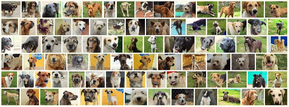

NOSOTROS
La Fundación Patitas de Corazón fue constituida el 1 de Abril de 2016 y abriremos las puertas, el 8 de Noviembre del mismo año. Somos una
organización sin ánimo de lucro, que buscamos reducir la presencia de
animales desprotegidos en la ciudad de Fusagasuga, a través de campañas estructuradas
de esterilización y concienciación de los habitantes de la zona.
Protegemos animales en difíciles condiciones y les damos resguardo,
alimentación y afecto, mientras les conseguimos un hogar digno para
vivir.
El objetivo social de la Fundación es desarrollar campañas
masivas de esterilización a bajos costos, dirigidas a caninos y felinos
de bajos estratos, con el fin de disminuir la super población animal,
el maltrato, el abandono y el abuso contra los animales.